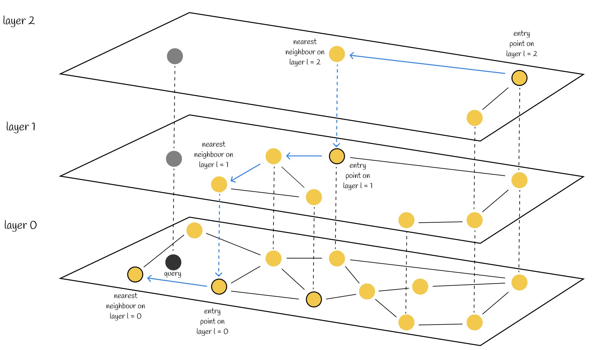

Vector Database
In the AI era, the form of data we process has undergone fundamental changes.
Traditional databases store structured data: numbers, strings, dates.
AI applications process semantics: the meaning of a piece of text, the content of an image, the meaning of a voice clip. This semantic information is represented as vectors—a sequence of floating-point numbers, e.g., [0.123, -0.456, 0.789, ...].
A vector database is a database specifically designed to store, index, and query these vectors. Without it, RAG (Retrieval-Augmented Generation) cannot work, semantic search cannot be implemented, and recommendation systems cannot run efficiently.

Core Value of Vector Databases:Find the top K results most similar to a query vector within milliseconds from millions or even billions of vectors.。
Challenges of Vector Similarity Search
Only by understanding the nature of the problem can you understand why specialized algorithms are needed.
Complexity Problem of Brute-Force Search
The simplest approach is brute-force search: compute the similarity between the query vector and every vector in the database, sort, and take the top K.
Example
# Brute-force Search Demo: Simple but Inefficient
# ============================================
import numpy as np
from typing import List, Tuple
def l2_distance(v1: np.ndarray, v2: np.ndarray) -> float:
"""Compute L2 Euclidean distance: the smaller, the more similar."""
return np.sqrt(np.sum((v1 - v2) ** 2))
def brute_force_search(
query: np.ndarray,
vectors: List[np.ndarray],
top_k: int = 5
) -> List[Tuple[int, float]]:
"""
Brute-force search: compute distances to all vectors, sort, and return Top K
Advantages: simple and accurate, 100% recall
Disadvantages: extremely slow with large data volumes
"""
# Compute distance to each vector
distances = []
for idx, vec in enumerate(vectors):
dist = l2_distance(query, vec)
distances.append((idx, dist))
# Sort by distance, take top K
distances.sort(key=lambda x: x[1])
return distances[:top_k]
# Generate 10,000 random 128-dimensional vectors (simulating a vector database)
np.random.seed(42)
vector_count = 10000
dimension = 128
vectors = [np.random.randn(dimension) for _ in range(vector_count)]
# Generate a query vector
query_vector = np.random.randn(dimension)
# Execute brute-force search
print(f"Searching Top 5 among {vector_count} vectors...")
results = brute_force_search(query_vector, vectors, top_k=5)
print("Search results:")
for idx, dist in results:
print(f" Vector {idx:4d}, distance = {dist:.4f}")
# Output looks like:
# Searching Top 5 among 10,000 vectors...
# Search results:
# Vector 8236, distance = 13.3986
# Vector 8946, distance = 13.5604
# Vector 9891, distance = 13.5688
# Vector 5172, distance = 13.5987
# Vector 5223, distance = 13.6081
The problem with brute-force search is obvious: every query has to traverse all vectors.
If there are 1 million vectors, each query requires computing 1 million distances.
If there are 1 billion vectors, each query requires 1 billion calculations—this is completely unacceptable in production.
The "Curse of Dimensionality" in High-Dimensional Space
To make matters worse, vectors are usually high-dimensional.
OpenAI's text-embedding-3-small is 1536-dimensional, and large is 3072-dimensional.
In high-dimensional spaces, traditional spatial indexing methods (such as KD-Tree) experience a sharp drop in efficiency, sometimes even slower than brute-force search.
| Data size | Brute-force search time (estimated) | Acceptable? |
|---|---|---|
| 10 thousand | ~1 millisecond | Acceptable |
| 1 million | ~100 milliseconds | A bit slow |
| 10 million | ~1 second | Too slow |
| 100 million | ~10 seconds | Completely unacceptable |
| 1 billion | ~100 seconds | Unusable |
This is why we needapproximate nearest neighbor (ANN) algorithms: sacrificing 100% accuracy for a 100x or even 1000x speedup.
Approximate Nearest Neighbor (ANN) Algorithms
The core idea of ANN algorithms:Build an index structure so that queries don't need to traverse all vectors。
There are three mainstream algorithms: HNSW, IVF, and PQ.
HNSW: Hierarchical Navigable Small World Graph
HNSW (Hierarchical Navigable Small World) is one of the most popular algorithms today. It is inspired by the six degrees of separation theory—any two people in the world can be connected through at most 6 intermediaries.
HNSW uses a multi-layer sparse small-world graph. It quickly coarsely locates from the top-layer sparse nodes, then descends layer by layer to the bottom full-data layer for fine-grained search. By using hierarchical jumps, it greatly reduces the number of distance calculations, achieving fast, high-recall approximate nearest neighbor search.

Hierarchical structure:The bottom layer, Layer 0, stores all vectors; the higher the layer, the fewer nodes, acting as a fast track. The same vector is vertically linked across layers with dashed lines.
Search process (blue line path):
- Coarse search starts at the top-layer entry, finding the point closest to the query vector in that layer.
- Vertically descend to the middle layer and coarsely locate again.
- Fall to Layer 0, the full-data layer, for fine-grained traversal, and output the nearest neighbor.
Core principle:High layers quickly narrow the search range, while the bottom layer provides precise matching. It optimizes brute-force search to logarithmic complexity, offering high speed and high recall, making it a mainstream vector search algorithm.
Example
# Simplified demo of HNSW principles (not a production implementation)
# ============================================
import numpy as np
import random
from typing import List, Dict, Set, Tuple
class SimpleHNSW:
"""Simplified HNSW, only for demonstrating the principles"""
def __init__(self, dim: int, max_level: int = 3, ef_construction: int = 5):
self.dim = dim
self.max_level = max_level # Maximum number of layers
self.ef_construction = ef_construction # Number of candidates considered when building the graph
self.levels: List[Dict[int, np.ndarray]] = [{} for _ in range(max_level)]
self.edges: List[Dict[int, Set[int]]] = [{} for _ in range(max_level)]
self.next_id = 0
self.enter_point = None # Entry point (a point at the top layer)
def _random_level(self) -> int:
"""Randomly select a level: the higher the level, the lower the probability"""
level = 0
while random.random() < 0.5 and level < self.max_level - 1:
level += 1
return level
def _distance(self, v1: np.ndarray, v2: np.ndarray) -> float:
"""L2 distance"""
return np.sqrt(np.sum((v1 - v2) ** 2))
def _search_layer(
self,
query: np.ndarray,
level: int,
entry: int,
ef: int
) -> List[Tuple[float, int]]:
"""Search in a layer: starting from entry, greedily find ef closest points"""
if entry not in self.levels[level]:
return []
visited = set([entry])
candidates = [(self._distance(query, self.levels[level][entry]), entry)]
result = list(candidates)
while candidates:
# Take out the current closest candidate
candidates.sort()
dist, current = candidates.pop(0)
# Traverse neighbors
if current not in self.edges[level]:
continue
for neighbor in self.edges[level][current]:
if neighbor in visited:
continue
visited.add(neighbor)
neighbor_dist = self._distance(query, self.levels[level][neighbor])
# Add to candidates and result set
candidates.append((neighbor_dist, neighbor))
result.append((neighbor_dist, neighbor))
# Keep the result set size no larger than ef
result.sort()
result = result[:ef]
return result
def add(self, vector: np.ndarray) -> int:
"""Add a vector"""
vec_id = self.next_id
self.next_id += 1
# Randomly determine which layers this vector appears in
max_level_for_vec = self._random_level()
# Store the vector in all layers (in actual implementations, the full vector is usually stored only at the bottom layer)
for level in range(max_level_for_vec + 1):
self.levels[level][vec_id] = vector
self.edges[level][vec_id] = set()
# If it's the first point, set it as the entry
if self.enter_point is None:
self.enter_point = vec_id
return vec_id
# Search from the top layer downward to find the insertion position in each layer
current_entry = self.enter_point
# First search in layers above max_level_for_vec, updating the entry
for level in range(self.max_level - 1, max_level_for_vec, -1):
if current_entry in self.levels[level]:
layer_result = self._search_layer(vector, level, current_entry, 1)
if layer_result:
current_entry = layer_result[0][1]
# In layers up to max_level_for_vec, establish connections
for level in range(max_level_for_vec, -1, -1):
# Search for the closest ef_construction points in this layer
layer_result = self._search_layer(vector, level, current_entry, self.ef_construction)
# Connect to these points (simplified: bidirectional connection)
for dist, neighbor_id in layer_result:
self.edges[level][vec_id].add(neighbor_id)
self.edges[level][neighbor_id].add(vec_id)
# Update the entry for the next layer
if layer_result:
current_entry = layer_result[0][1]
# Update the top-layer entry
if max_level_for_vec > self._random_level(): # Simplified check
self.enter_point = vec_id
return vec_id
def search(self, query: np.ndarray, top_k: int = 5, ef: int = 10) -> List[Tuple[int, float]]:
"""Search Top K nearest neighbors"""
if self.enter_point is None:
return []
current_entry = self.enter_point
# From the top level down to the first level
for level in range(self.max_level - 1, 0, -1):
if current_entry in self.levels[level]:
layer_result = self._search_layer(query, level, current_entry, 1)
if layer_result:
current_entry = layer_result[0][1]
# Search ef points at the bottom level, then return Top K
layer_result = self._search_layer(query, 0, current_entry, ef)
layer_result.sort()
return [(vec_id, dist) for dist, vec_id in layer_result[:top_k]]
# Test
np.random.seed(42)
dim = 128
hnsw = SimpleHNSW(dim=dim, max_level=3, ef_construction=5)
# Add 100 vectors
print("Building HNSW index (adding 100 vectors)...")
for i in range(100):
vec = np.random.randn(dim)
hnsw.add(vec)
print(f"Index construction complete, entry point = {hnsw.enter_point}")
# Generate query vector
query = np.random.randn(dim)
# Search
print("\nExecuting HNSW search...")
results = hnsw.search(query, top_k=5, ef=10)
print("Search results:")
for vec_id, dist in results:
print(f" Vector {vec_id:3d}, distance = {dist:.4f}")
# Output similar to:
# Building HNSW index (adding 100 vectors)...
# Index construction complete, entry point = 54
#
# Executing HNSW search...
# Search results:
# Vector 86, distance = 13.7515
# Vector 30, distance = 13.8651
# Vector 28, distance = 14.0754
# Vector 56, distance = 14.1106
# Vector 34, distance = 14.2131
Advantages of HNSW:
1. Fast query: Usually only a few nodes need to be visited to find the nearest neighbor.
-
2. Fast construction: Vectors can be added incrementally without rebuilding the entire index.
-
3. Simple parameters: Mainly adjust ef_construction (graph quality) and ef (search quality).
IVF: Inverted File Index
The idea of IVF (Inverted File) is "divide and conquer".
Steps:
-
1. Clustering: Divide the vector space into K "buckets" (using K-Means clustering).
-
2. Indexing: Each vector is assigned to its nearest bucket.
-
3. Query: First find the N buckets closest to the query vector, then search only within these N buckets.
Example
# Simplified demonstration of IVF principle
# ============================================
import numpy as np
from typing import List, Tuple
class SimpleIVF:
"""Simplified IVF, only for demonstrating the principle"""
def __init__(self, dim: int, nlist: int = 10):
self.dim = dim
self.nlist = nlist # Number of cluster centers (number of buckets)
self.centroids: np.ndarray = None # Cluster centers
self.inverted_lists: List[List[Tuple[int, np.ndarray]]] = [[] for _ in range(nlist)]
self.next_id = 0
def _l2_distance(self, v1: np.ndarray, v2: np.ndarray) -> float:
"""L2 distance"""
return np.sqrt(np.sum((v1 - v2) ** 2))
def _find_nearest_centroid(self, vector: np.ndarray) -> int:
"""Find the nearest cluster center"""
distances = [self._l2_distance(vector, c) for c in self.centroids]
return int(np.argmin(distances))
def fit(self, vectors: List[np.ndarray]):
"""Initialize cluster centers with K-Means (simplified: random selection)"""
# Simplified: randomly select nlist vectors as initial centers
# In actual implementation, K-Means iteration should be used
indices = np.random.choice(len(vectors), self.nlist, replace=False)
self.centroids = np.array([vectors[i] for i in indices])
def add(self, vector: np.ndarray) -> int:
"""Add vector"""
vec_id = self.next_id
self.next_id += 1
# Find the nearest bucket
centroid_idx = self._find_nearest_centroid(vector)
# Put it into this bucket
self.inverted_lists[centroid_idx].append((vec_id, vector))
return vec_id
def search(self, query: np.ndarray, top_k: int = 5, nprobe: int = 3) -> List[Tuple[int, float]]:
"""
Search Top K
nprobe: how many buckets to search (more is more accurate, but slower)
"""
# Find the nearest nprobe buckets
centroid_distances = [
(self._l2_distance(query, c), i)
for i, c in enumerate(self.centroids)
]
centroid_distances.sort()
nearest_centroids = [i for dist, i in centroid_distances[:nprobe]]
# Search only in these nprobe buckets
candidates = []
for centroid_idx in nearest_centroids:
for vec_id, vec in self.inverted_lists[centroid_idx]:
dist = self._l2_distance(query, vec)
candidates.append((dist, vec_id))
# Sort and return Top K
candidates.sort()
return [(vec_id, dist) for dist, vec_id in candidates[:top_k]]
# Test
np.random.seed(42)
dim = 128
# Generate 1000 vectors
vectors = [np.random.randn(dim) for _ in range(1000)]
# Build IVF index
ivf = SimpleIVF(dim=dim, nlist=20)
ivf.fit(vectors)
# Add vectors
for vec in vectors:
ivf.add(vec)
print(f"IVF index construction complete, bucket count = {ivf.nlist}")
for i in range(ivf.nlist):
print(f" Bucket {i:2d}: {len(ivf.inverted_lists[i])} vectors")
# Query
query = np.random.randn(dim)
print("\nExecuting IVF search (nprobe=3)...")
results = ivf.search(query, top_k=5, nprobe=3)
print("Search results:")
for vec_id, dist in results:
print(f" Vector {vec_id:3d}, distance = {dist:.4f}")
# Output similar to:
# IVF index construction complete, bucket count = 20
# Bucket 0: 63 vectors
# Bucket 1: 56 vectors
# ...
#
# Executing IVF search (nprobe=3)...
# Search results:
# Vector 863, distance = 13.5409
# Vector 189, distance = 13.7083
# Vector 491, distance = 13.8628
# Vector 264, distance = 13.9812
# Vector 781, distance = 14.0021
The advantage of IVF is its small memory footprint, and you can dynamically adjust the nprobe parameter at query time to balance speed and accuracy.
PQ: Product Quantization
PQ (Product Quantization) is a compression algorithm.
Core idea:
-
1. Splitting: Split the high-dimensional vector into multiple smaller segments (subvectors).
-
2. Quantization: Cluster each small segment independently, and replace the original vector with the cluster center's ID.
-
3. Lookup: At query time, use a lookup table to quickly compute approximate distances.
For example, a 128-dimensional vector is split into 8 segments of 16 dimensions each, and each segment is quantized with 256 centers. As a result, each vector only needs 8 bytes of storage (originally 128 * 4 = 512 bytes).
IVF-PQ Combination
In production environments, IVF and PQ are usually combined:
IVF is responsible for "bucketing" to reduce the search scope, and PQ is responsible for "compression" to reduce memory and computation.
| Algorithm | Speed | Accuracy | Memory | Applicable scenarios |
|---|---|---|---|---|
| Brute-force search | 慢 | 100% | 高 | Small data size, needs 100% accuracy |
| HNSW | Extremely fast | 高 | 中 | Query-intensive, needs low latency |
| IVF | 快 | 中 | 低 | Large-scale data, acceptable small accuracy loss |
| IVF-PQ | Very fast | 中 | Extremely low | Ultra-large-scale data, memory constrained |
Similarity Metrics
There are many ways to compute "similarity", and choosing the right metric is important.
Cosine Similarity
Cosine similarity measures the angle between the directions of two vectors, with a range of [-1, 1].
The closer the value is to 1, the more similar; the closer to -1, the more opposite.
Example
# Cosine similarity computation
# ============================================
import numpy as np
def cosine_similarity(v1: np.ndarray, v2: np.ndarray) -> float:
"""
Cosine similarity = (v1 · v2) / (|v1| * |v2|)
Range [-1, 1], closer to 1 means more similar
"""
dot_product = np.dot(v1, v2)
norm1 = np.linalg.norm(v1)
norm2 = np.linalg.norm(v2)
return dot_product / (norm1 * norm2)
# Test
np.random.seed(42)
v1 = np.array([1, 2, 3, 4, 5])
v2 = np.array([2, 4, 6, 8, 10]) # Same direction
v3 = np.array([-1, -2, -3, -4, -5]) # Opposite direction
v4 = np.random.randn(5) # Random
print(f"v1 = {v1}")
print(f"v2 = {v2}")
print(f"v3 = {v3}")
print(f"v4 = {v4}")
print()
print(f"cosine(v1, v2) = {cosine_similarity(v1, v2):.4f} (same direction, should be 1.0)")
print(f"cosine(v1, v3) = {cosine_similarity(v1, v3):.4f} (opposite direction, should be -1.0)")
print(f"cosine(v1, v4) = {cosine_similarity(v1, v4):.4f}")
# Output:
# v1 = [1 2 3 4 5]
# v2 = [ 2 4 6 8 10]
# v3 = [-1 -2 -3 -4 -5]
# v4 = [ 0.4967 -0.1383 0.6477 1.5230 -0.2342]
#
# cosine(v1, v2) = 1.0000 (same direction, should be 1.0)
# cosine(v1, v3) = -1.0000 (opposite direction, should be -1.0)
# cosine(v1, v4) = 0.2143
Cosine similarity's characteristic: it doesn't care about the length of the vector, only the direction. This is common in text embeddings, because the "semantics" of text is unrelated to length.
L2 Euclidean Distance
L2 distance is the straight-line distance between two points in space; the smaller, the more similar.
Inner Product (Dot Product)
Inner product = v1 · v2. If the vectors are normalized, the inner product equals cosine similarity.
Selection Guide
| Metric | Value range | When to choose | Typical use cases |
|---|---|---|---|
| Cosine similarity | [-1, 1] | Only cares about direction, not length | Text embeddings, semantic search |
| L2 distance | [0, ∞) | Spatial position matters | Image features, recommendation systems |
| Inner product | (-∞, ∞) | Vectors are normalized, or length is meaningful | Certain specific embedding models |
Most embedding models (e.g., OpenAI's text-embedding series) output normalized vectors; in this casecosine similarity = inner product, so it doesn't matter which one you use.
Comparison of Mainstream Vector Databases
Vector databases fall into three categories: local libraries (FAISS), lightweight open-source (Chroma, Qdrant), and enterprise-grade (Milvus, Pinecone, Weaviate).
FAISS: A Local Library from Facebook
FAISS is not a complete database, but a C++ library (with Python bindings).
Example
# FAISS basic usage demonstration
# ============================================
import numpy as np
# Note: You need to install FAISS first to run it
# pip install faiss-cpu (CPU version)
# or
# pip install faiss-gpu (GPU version)
# Below is a typical FAISS usage example (code sample, not actually executed)
def faiss_example():
"""FAISS usage example"""
# 1. Prepare data
dimension = 128
nb = 10000 # Number of database vectors
nq = 10 # Number of query vectors
np.random.seed(42)
xb = np.random.random((nb, dimension)).astype('float32') # Database
xq = np.random.random((nq, dimension)).astype('float32') # Query
# 2. Create index (IVF example)
import faiss
nlist = 100 # Number of cluster centers
quantizer = faiss.IndexFlatL2(dimension) # Quantizer
index = faiss.IndexIVFFlat(quantizer, dimension, nlist, faiss.METRIC_L2)
# 3. Train index
index.train(xb)
# 4. Add vectors
index.add(xb)
# 5. Set nprobe for search
index.nprobe = 10
# 6. Search Top 5
k = 5
distances, indices = index.search(xq, k)
print("Query results (Top 5 for the first 2 queries):")
for i in range(min(2, nq)):
print(f"Query {i}:")
for j in range(k):
print(f" Index {indices[i][j]}, distance {distances[i][j]:.4f}")
return index
# HNSW index example
def faiss_hnsw_example():
"""FAISS HNSW index"""
import faiss
dimension = 128
index = faiss.IndexHNSWFlat(dimension, 32) # 32 = M parameter (number of connections per node)
index.hnsw.efConstruction = 40 # ef during graph construction
index.hnsw.efSearch = 16 # ef during search
# Add data...
# index.add(xb)
return index
# If FAISS is installed, you can uncomment the lines below to run
# faiss_example()
print("FAISS example code: This is a typical usage of FAISS.")
print("Key steps: create index → train → add vectors → search.")
print()
print("Common FAISS index types:")
print(" - IndexFlatL2: brute-force search (accurate but slow)")
print(" - IndexIVFFlat: IVF bucketed search")
print(" - IndexIVFPQ: IVF + PQ compression")
print(" - IndexHNSWFlat: HNSW graph index")
FAISS features:
-
1. Extremely fast: C++ implementation, optimized to the extreme.
-
2. Full-featured: Supports almost all mainstream ANN algorithms.
-
3. Local: No network, no persistence (you need to save the index file yourself).
Applicable scenarios: offline batch processing, not wanting to set up a service, relatively small data volume.
Chroma: Lightweight and Local-First
Chroma is a simple and easy-to-use vector database designed to "make AI application development faster."
Example
# Chroma basic usage demonstration
# ============================================
# Install: pip install chromadb
def chroma_example():
"""Chroma usage example"""
import chromadb
from chromadb.utils import embedding_functions
# 1. Initialize client (local mode, data saved to disk)
client = chromadb.PersistentClient(path="./runoob-chroma-db")
# 2. Create or get a collection
collection = client.get_or_create_collection(
name="runoob_docs",
metadata={"description": "Runoob tutorial document collection"}
)
# 3. Add documents (Chroma handles embedding automatically)
# You can use OpenAI, Cohere, etc., or provide your own vectors
documents = [
"Python is an interpreted, high-level, general-purpose programming language.",
"JavaScript is a lightweight, interpreted programming language.",
"Vector databases are used to store and retrieve vector embeddings.",
"RAG, or Retrieval-Augmented Generation, is a technique that combines retrieval with generation.",
"HNSW is an approximate nearest neighbor algorithm based on a hierarchical small-world graph."
]
metadatas = [
{"category": "programming", "language": "Python"},
{"category": "programming", "language": "JavaScript"},
{"category": "database", "topic": "vector"},
{"category": "ai", "topic": "rag"},
{"category": "algorithm", "topic": "hnsw"}
]
ids = ["doc1", "doc2", "doc3", "doc4", "doc5"]
# Add (using mock vectors here; in practice, use an embedding model)
import numpy as np
np.random.seed(42)
embeddings = [np.random.randn(128).tolist() for _ in range(5)]
collection.add(
documents=documents,
metadatas=metadatas,
ids=ids,
embeddings=embeddings # If not provided, Chroma uses the default embed function
)
print(f"There are {collection.count()} documents in the collection")
# 4. Query
query_embedding = np.random.randn(128).tolist()
results = collection.query(
query_embeddings=[query_embedding],
n_results=3,
# Metadata filtering can be added
# where={"category": "ai"}
)
print("\nQuery results:")
for i in range(len(results['ids'][0])):
print(f"ID: {results['ids'][0][i]}")
print(f"Document: {results['documents'])
print(f"Distance: {results['distances'])
print("---")
return collection
# If Chroma is installed, you can uncomment the lines below to run
# chroma_example()
print("Chroma example code: simple design, works out of the box.")
print()
print("Chroma features:")
print(" - Simple: friendly API, get started in minutes")
print(" - Local-first: can persist to disk or run in memory")
print(" - Built-in embeddings: supports OpenAI, Cohere, Sentence-Transformers")
print(" - Supports metadata filtering: can filter by metadata during queries")
Qdrant: Production-Grade Open Source
Qdrant is a vector database written in Rust, with good performance and full features.
Example
# Qdrant basic usage demo
# ============================================
# Install: pip install qdrant-client
# Start service: docker run -p 6333:6333 qdrant/qdrant
def qdrant_example():
"""Qdrant usage example"""
from qdrant_client import QdrantClient
from qdrant_client.models import Distance, VectorParams, PointStruct, Filter, FieldCondition, MatchValue
# 1. Connect client
client = QdrantClient(host="localhost", port=6333)
# 2. Create collection
client.recreate_collection(
collection_name="runoob_collection",
vectors_config=VectorParams(
size=128,
distance=Distance.COSINE # or L2, DOT
),
# Optional: configure HNSW index parameters
# hnsw_config=HnswConfig(m=16, ef_construct=100)
)
# 3. Add points
import numpy as np
np.random.seed(42)
points = [
PointStruct(
id=i,
vector=np.random.randn(128).tolist(),
payload={
"text": f"Content of document {i}",
"category": "tech" if i % 2 == 0 else "life",
"author": f"author_{i % 3}"
}
)
for i in range(100)
]
client.upsert(
collection_name="runoob_collection",
points=points
)
# 4. Query
query_vector = np.random.randn(128).tolist()
results = client.search(
collection_name="runoob_collection",
query_vector=query_vector,
limit=5,
# Filtering can be added
# query_filter=Filter(
# must=[
# FieldCondition(key="category", match=MatchValue(value="tech"))
# ]
# )
)
print("Query results:")
for result in results:
print(f"ID: {result.id}, Score: {result.score:.4f}")
print(f"Payload: {result.payload}")
print("---")
return client
# If Qdrant is running, you can uncomment the lines below to run
# qdrant_example()
print("Qdrant example code: Rust implementation, comprehensive features.")
print()
print("Qdrant features:")
print(" - Good performance: Rust + HNSW")
print(" - Full features: supports filtering, grouping, aggregation, pagination")
print(" - Easy deployment: one-click start with Docker")
print(" - Supports sharding: can scale horizontally")
Mainstream Vector Database Comparison Table
| Product | Type | Deployment | Features | Use cases |
|---|---|---|---|---|
| FAISS | Local library | 无 | Extremely fast, full-featured, requires self-maintenance | Offline processing, don't want to set up a service |
| Chroma | Lightweight | Local/Server | Simple and easy to use, Python-first | Prototyping, small projects |
| Qdrant | Open source | Docker/K8s | Good performance, full features, Rust | Production environment, medium scale |
| Milvus | Open source | Distributed | Enterprise-grade, most complete features | Large-scale production environment |
| Weaviate | Open source | Docker/K8s | Modular, good ecosystem | Need flexible composition of features |
| Pinecone | Cloud service | SaaS | Fully managed, scale on demand | Don't want to operate, quick launch |
Embedding Model Selection
Vector databases are just infrastructure; what truly determines results is the embedding model.
Comparison of Mainstream Embedding Models
| Model | Dimensions | Features | Price |
|---|---|---|---|
| OpenAI text-embedding-3-small | 1536 | High cost-performance, good overall quality | $0.00002 / 1K tokens |
| OpenAI text-embedding-3-large | 3072 | Highest quality, high dimensions | $0.00013 / 1K tokens |
| Cohere Embed v3 | 1024 | Good multilingual support | $0.0001 / 1K tokens |
| bge-large-zh-v1.5 | 1024 | Good for Chinese, open source and free | Free |
| bge-m3 | 1024 | Multilingual, multi-functional | Free |
| gte-large | 1024 | Balanced choice, open source | Free |
Dimensions vs. Performance Trade-off
The higher the dimensions, the better the results usually, but:
-
1. Storage is more expensive: 3072 dimensions take up twice as much space as 1536 dimensions.
-
2. Computation is slower: Distance computation cost is proportional to dimensionality.
-
3. Larger index: HNSW/IVF indexes will also be larger.
Recommendation:First test with a low-dimensional model; if it's not enough, move to a higher dimension.. In most scenarios, 1536 dimensions is already good enough.
Hybrid Search
Pure vector search is sometimes not good enough, because it only matches "semantics", not "keywords".
Hybrid search = vector search + keyword search, then fuse the results.
BM25 Sparse Retrieval
BM25 is a classic algorithm in traditional search, measuring the degree of keyword matching.
Example
# BM25 keyword search demo
# ============================================
import math
from typing import List, Dict, Set
class SimpleBM25:
"""Simplified BM25 implementation"""
def __init__(self, k1: float = 1.5, b: float = 0.75):
self.k1 = k1
self.b = b
self.documents: List[List[str]] = []
self.doc_lengths: List[int] = []
self.avg_doc_length: float = 0
self.term_freqs: List[Dict[str, int]] = []
self.doc_freq: Dict[str, int] = {}
self.num_docs: int = 0
def _tokenize(self, text: str) -> List[str]:
"""Simple tokenization (by spaces and punctuation)"""
# Simplified: convert to lowercase, split by non-alphanumeric characters
import re
return [t.lower() for t in re.findall(r'\w+', text)]
def fit(self, documents: List[str]):
"""Build index"""
self.documents = []
self.doc_lengths = []
self.term_freqs = []
self.doc_freq = {}
self.num_docs = len(documents)
for doc in documents:
tokens = self._tokenize(doc)
self.documents.append(tokens)
self.doc_lengths.append(len(tokens))
# Count term frequency
tf: Dict[str, int] = {}
for token in tokens:
tf[token] = tf.get(token, 0) + 1
self.term_freqs.append(tf)
# Update document frequency
for token in tf.keys():
self.doc_freq[token] = self.doc_freq.get(token, 0) + 1
self.avg_doc_length = sum(self.doc_lengths) / self.num_docs
def score(self, query: str) -> List[float]:
"""Calculate BM25 score for each document"""
query_tokens = self._tokenize(query)
scores = [0.0] * self.num_docs
for token in query_tokens:
if token not in self.doc_freq:
continue
# IDF calculation
df = self.doc_freq[token]
idf = math.log(1 + (self.num_docs - df + 0.5) / (df + 0.5))
# Calculate score for each document
for doc_idx in range(self.num_docs):
doc_len = self.doc_lengths[doc_idx]
tf = self.term_freqs[doc_idx].get(token, 0)
# BM25 core formula
numerator = tf * (self.k1 + 1)
denominator = tf + self.k1 * (1 - self.b + self.b * doc_len / self.avg_doc_length)
scores[doc_idx] += idf * numerator / denominator
return scores
def search(self, query: str, top_k: int = 5) -> List[Dict]:
"""Search Top K"""
scores = self.score(query)
# Sort
results = [
{"doc_idx": i, "score": s}
for i, s in enumerate(scores)
]
results.sort(key=lambda x: x["score"], reverse=True)
return results[:top_k]
# Test
documents = [
"Python is a programming language, easy to learn.",
"JavaScript is used for web development, usable on both frontend and backend.",
"Vector databases are used to store and retrieve vector embeddings.",
"There are many types of databases, such as relational databases and NoSQL databases.",
"HNSW is an approximate nearest neighbor search algorithm."
]
bm25 = SimpleBM25()
bm25.fit(documents)
# Search
query = "database"
results = bm25.search(query, top_k=5)
print(f"Query:\"{query}\"")
print("BM25 search results:")
for r in results:
print(f" Document {r['doc_idx']}: {documents[r['doc_idx']]}")
print(f" Score = {r['score']:.4f}")
# Output similar to:
# Query: "database"
# BM25 search results:
# Document 2: Vector databases are used to store and retrieve vector embeddings.
# Score = 0.7134
# Document 3: There are many types of databases, such as relational databases and NoSQL databases.
# Score = 0.6148
# ...
RRF: Reciprocal Rank Fusion
RRF (Reciprocal Rank Fusion) is a simple and effective method for fusing multiple search results.
Formula: score = 1 / (k + rank), where k is usually 60.
Example
# RRF fusion demo
# ============================================
from typing import List, Dict, Any
def rrf_fuse(
result_lists: List[List[Any]],
k: int = 60
) -> Dict[Any, float]:
"""
RRF fusion: for each result list, add scores using 1/(k + rank)
result_lists: multiple sorted result lists
"""
scores: Dict[Any, float] = {}
for results in result_lists:
for rank, item in enumerate(results):
score = 1.0 / (k + rank)
scores[item] = scores.get(item, 0) + score
return scores
# Example: vector search results and BM25 search results
vector_results = ["doc3", "doc1", "doc4", "doc2", "doc5"] # Vector search considers doc3 most relevant
bm25_results = ["doc2", "doc4", "doc3", "doc5", "doc1"] # BM25 considers doc2 most relevant
# RRF fusion
fused = rrf_fuse([vector_results, bm25_results])
# Sort
final_rank = sorted(fused.items(), key=lambda x: x[1], reverse=True)
print("Vector search results:", vector_results)
print("BM25 search results:", bm25_results)
print()
print("Final ranking after RRF fusion:")
for doc, score in final_rank:
print(f" {doc}: {score:.6f}")
# Output:
# Vector search results: ['doc3', 'doc1', 'doc4', 'doc2', 'doc5']
# BM25 search results: ['doc2', 'doc4', 'doc3', 'doc5', 'doc1']
#
# Final ranking after RRF fusion:
# doc3: 0.032787
# doc2: 0.032787
# doc4: 0.032520
# doc1: 0.016393
# doc5: 0.016393
Fusion Weight Tuning
Besides RRF, weighted linear fusion can also be used:
final_score = α * vector_score + (1 - α) * bm25_score
α is the weight for vector search, which needs to be tuned based on actual data.
Re-ranking
Hybrid search can be further improved: first recall a batch of candidates, then re-rank with a more powerful model.
Cross-Encoder Principles
Bi-Encoder (for retrieval): encode query and document separately, compare with similarity.
Cross-Encoder (for reranking): concatenate query and document as input to the model, directly output a relevance score.
Cross-Encoder is more accurate but slower, so it is suitable for reranking only the top 50-100 candidates.
Example
# Re-ranking process demo
# ============================================
def reranking_pipeline_example():
"""
Two-stage retrieval process:
1. Coarse retrieval: use vector search to quickly find the Top 100
2. Fine ranking: use Cross-Encoder to rerank the Top 100
"""
print("Two-stage retrieval process:")
print()
print("Stage 1: Coarse retrieval (vector search)")
print(" - Goal: fast, low latency")
print(" - Method: HNSW/IVF vector search")
print(" - Output: Top 100 candidates")
print()
print("Stage 2: Fine ranking (Cross-Encoder)")
print(" - Goal: accurate, high quality")
print(" - Method: Cross-Encoder pairwise scoring")
print(" - Output: final Top 10")
print()
print("Typical configuration:")
print(" - Retrieval stage: HNSW efSearch = 128, recall 100")
print(" - Reranking stage: use bge-reranker or Cohere Rerank")
print()
print("Why not directly use Cross-Encoder to search everything?")
print(" - Cross-Encoder is too slow; searching 1 million documents is unrealistic")
print(" - Vector search over 1 million is fast, and Cross-Encoder reranking over 100 is also fast")
# Cohere Rerank API example (pseudocode)
def cohere_rerank_example():
"""
Cohere Rerank API usage example
"""
print("Typical usage of the Cohere Rerank API:")
print()
print('''
import cohere
co = cohere.Client(api_key="your-api-key")
query = "What is a vector database?"
documents = [
"Content of document 1...",
"Content of document 2...",
... # top 100 candidates
]
results = co.rerank(
query=query,
documents=documents,
top_n=10,
model="rerank-english-v3.0"
)
for r in results:
print(r.index, r.relevance_score, documents[r.index])
''')
reranking_pipeline_example()
Performance vs. Latency Trade-off
| Approach | Quality | Speed | Cost | Applicable scenario |
|---|---|---|---|---|
| Pure vector search | 中 | Extremely fast | 低 | For extremely high speed requirements |
| Hybrid search | Medium-high | 快 | 中 | Balanced choice |
| Vector + reranking | 高 | 中 | Medium-high | Pursuing quality |
| Hybrid + reranking | Highest | Medium-slow | 高 | Quality first |
Production Environment Optimization
From demo to production, there are many details to pay attention to.
Index Sharding Strategies
When data volume exceeds single-machine capacity, sharding is needed:
-
1. Shard by ID: Simple, but queries need to search all shards.
-
2. Shard by vector clustering: Only search a few relevant shards during queries.
Metadata Filtering
In production environments, metadata filtering is almost always combined.
Two strategies:
-
1. Pre-filtering: First filter by metadata, then perform vector search.
-
2. Post-filtering: First perform vector search, then filter by metadata.
Selection principle: if many vectors remain after filtering, use pre-filtering; if few remain, use post-filtering.
Incremental Updates
Most vector databases support incremental addition, but note:
-
1. Batch addition: Add in batches, not one by one.
-
2. Index rebuilding: Some indexes (e.g., IVF) need periodic retraining.
-
3. Version management: Keep old index versions so you can roll back on updates.
Monitoring Metrics
Production environments should monitor:
-
1. Query latency：P50、P95、P99。
-
2. Recall rate: Regularly check the quality of Top K results.
-
3. Index size: Memory/disk usage.
-
4. QPSQueries per second.
Click to Share Notes
<p style="font-size:14px;">Notes need to be an extension of this article's content!</p><br> <p style="font-size:12px;"><a href="../tougao.html" target="_blank">Article submission, click here</a></p> <p style="font-size:14px;"><a href="../w3cnote/runoob-user-test-intro.html" target="_blank">How to get registration invitation code</a></p> <h3 class="text-muted"><i class="fa fa-info-circle" aria-hidden="true"></i> Must <a href=";.html" class="runoob-pop">login</a> before sharing notes!</h3> <p><a href="../w3cnote/runoob-user-test-intro.html" target="_blank">How to get registration invitation code</a></p>